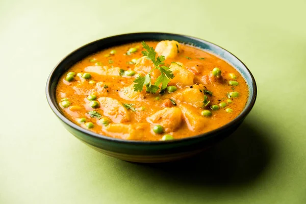

Aloo Matar
Here is a delightful dish-potatoes and peas in a tomato puree sauce.It's pretty easy to rustle up, and adds zing to any meal.The best thing is that all of the ingredients are readily available. Serve hot with naan, puris, rotis, or plain rice.
Ingredients
- ¼ cup vegetable oil
- 2 medium onions, finely chopped
- 1 tablespoon ginger garlic paste
- 1 bay leaf
- 4 large potatoes, peeled and chopped
- 1 cup frozen peas
- ½ cup tomato puree
- 1 ½ teaspoons garam masala
- 1 ½ teaspoons paprika
- 1 teaspoon white sugar
- 1 teaspoon salt
- 2 tablespoons chopped cilantro
Directions
- Heat the oil in a wok over medium heat. Stir in the onions, ginger garlic paste, and bay leaf. Cook until the onions are tender. Mix in the potatoes and peas. Cover and cook until the potatoes are tender,about 15 minutes. Remove the bay leaf.
- Stir the tomato puree, garam masala, paprika, sugar, and salt into the vegetable mixture. Continue cooking about 10 minutes. Mix in the cilantro and continue cooking about 2 minutes.